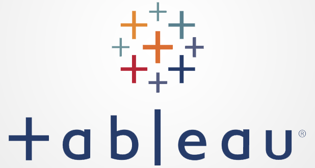

In this project, I performed comprehensive data cleaning on a movie dataset using SQL. The cleaning process involved checking for and handling missing data, ensuring data types were accurate, and correcting erroneous entries in the 'year' column. I also removed duplicates to improve data quality. I visualized budget vs. gross revenue using scatter plots, both in basic form and with Seaborn for enhanced insights, and analyzed the correlation between these variables to identify trends. This data preparation laid the foundation for further analysis and visualization of the movie dataset.

This project involved an in-depth exploration of a COVID-19 dataset using SQL Server. The analysis focused on understanding key trends, such as case progression, recovery rates, and mortality across different regions. Through SQL queries, I was able to identify patterns, filter and organize data efficiently, and present meaningful insights that highlight the pandemic's impact on a global scale. The goal of this project was to extract actionable insights and visualize the data for better decision-making.

This interactive Tableau dashboard provides a detailed analysis of COVID-19’s global spread by visualizing key metrics such as the percentage of population infected per country and total reported cases. Through dynamic line and bar graphs, it tracks the progression of infection rates over time and compares country-specific data. By using a combination of visual elements, the dashboard presents a clear picture of how different regions have been impacted, offering insights into trends in the infection rate across populations. The visualizations aim to help users quickly grasp the scale and regional differences in the pandemic's effects.